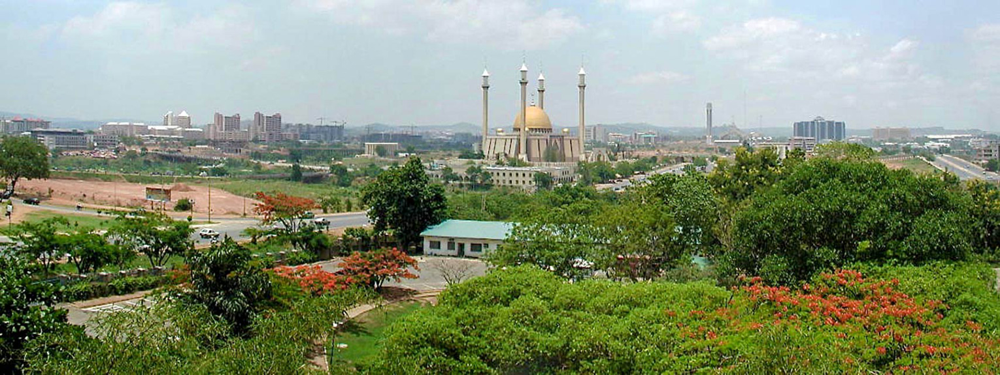
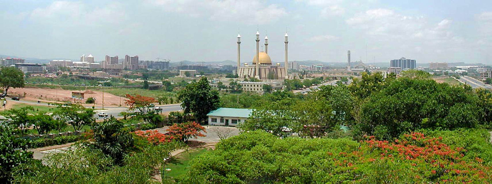
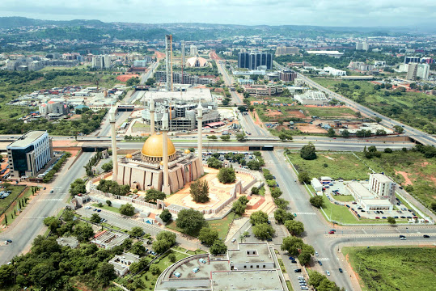
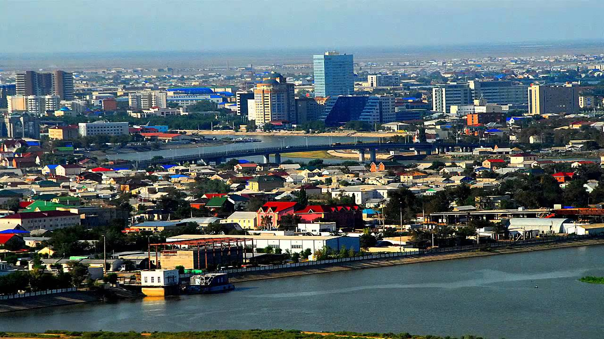

The Federal Republic of Nigeria, commonly referred to as Nigeria is a country in West Africa, bordering Benin in the west, Chad and Cameroon in the east, and Niger in the north. Its coast in the south is located on the Gulf of Guinea in the Atlantic Ocean. The federal republic comprises 36 states and the Federal Capital Territory,where the capital, Abuja is located. Nigeria is officially a democratic secular country.
Nigeria is often referred to as the "Giant of Africa", owing to its large population and economy. With 186 million inhabitants, Nigeria is the most populous country in Africa and the seventh most populous country in the world. As of 2015, Nigeria is the world's 20th largest economy, worth more than $500 billion and $1 trillion in terms of nominal GDP and purchasing power parity respectively. It overtook South Africa to become Africa's largest economy in 2014. The 2013 debt-to-GDP ratio was 11 percent. Nigeria is considered to be an emerging market by the World Bank; it has been identified as a regional power on the African continent, a middle power in international affairs, and has also been identified as an emerging global power.
Lagos
Lagos is a city in the Nigerian state of Lagos. The city, with its adjoining conurbation, is the most populous in Nigeria, and the most populous on the African continent. It is one of the fastest growing cities in the world, and also one of the most populous urban agglomerations. Lagos is a major financial centre in Africa; the megacity has the highest GDP, and also houses one of the largest and busiest ports on the continent. Lagos State is a major economic centre of Nigeria. It would be the fifth largest economy in Africa if it were a country. Its total generated revenue in 2017 was around US$920 million, growing by 10.43% compared to 2016.
Learn MoreAbuja
Abuja is the capital city of Nigeria located in the centre of the country within the Federal Capital Territory (FCT). It is a planned city and was built mainly in the 1980s, replacing the country's most populous city of Lagos as the capital on 12 December 1991. Abuja's geography is defined by Aso Rock, a 400-metre (1,300 ft) monolith left by water erosion. The Presidential Complex, National Assembly, Supreme Court and much of the city extend to the south of the rock. Zuma Rock, a 792-metre (2,598 ft) monolith, lies just north of the city on the expressway to Kaduna. At the 2006 census, the city of Abuja had a population of 776,298, making it one of the ten most populous cities in Nigeria.
Learn MorePort Harcourt
Port Harcourt is the capital and largest city of Rivers State, Nigeria. It lies along the Bonny River and is located in the Niger Delta. In 1956 crude oil was discovered in commercial quantities at Oloibiri, and Port Harcourt's economy turned to petroleum when the first shipment of Nigerian crude oil was exported through the city in 1958. Through the benefits of the Nigerian petroleum industry, Port Harcourt was further developed, with aspects of modernization such as overpasses, city blocks, taller and more substantial buildings. Oil firms that currently have offices in the city include Royal Dutch Shell and Chevron.
Learn MoreKano

Kano is a state located in Northern Nigeria. Created on May 27, 1967 from part of the Northern Region. Commercial activities in Kano first developed with the establishment of the Kurmi market by the Emir of Kano Muhammadu Rumfa in the 16th Century CE. Subsequent leaders made contributions to the emergence of Kano as a leading commercial center in Sudanic Africa. Kano State is the second largest industrial center after Lagos State in Nigeria and the largest in Northern Nigeria with textile, tanning, footwear, cosmetics, plastics, enamelware, pharmaceuticals, ceramics, furniture and other industries. Others include agricultural implements, soft drinks, food and beverages, dairy products, vegetable oil, animal feeds etc.
Learn More